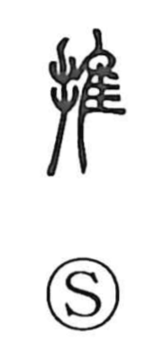

排

Uncategorized
Kun: | On: hai
to expel ・ to push aside ・ to clear away ・ to exclude ・ to line up
Explanation
A phono-semantic character: the hand element signals an action, while 非 functions as the phonetic core, as it does in 俳 and 徘. 非 originally depicted a fine-toothed comb with teeth aligned on both sides; from the image of two rows pressing against one another, it was already glossed in the Shuowen as “to push.” Drawing on that image, the character came to mean pushing something aside or out—driving off, clearing away, removing—and, by extension, arranging or lining things up.